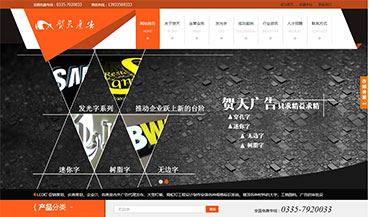

我性格较为开朗，为人诚实谦虚，喜欢画画、旅游。跟同事之间能够很好的相处。在工作中，态度认真，积极热情，有很好的耐心，有较强的团队精神。接受新鲜事物能力较强。
- 精通DIV+CSS/JQ/JS等网站前端技术
- 能够熟练编写标准前端代码，熟悉浏览器兼容问题解决方案
- 熟练掌握bootstrap框架和Ajax技术，以及Html5/Css3，能够实现网页的动态效果与页面交互
- 熟练掌握响应式设计，能够开发移动端页面
- 熟练使用Photoshop、Sublime、Dreamweaver等软件，掌握网站效果图的制作、切片以及HTML页面代码优化等技术
- 了解轻量级的skel.js的响应式框架、ECharts图标库、Angular.js以及Node.js
- 了解 Java编程语言及MySQL、sqlserver等数据库
北京第嘉文化传媒有限公司2014/12 - 2015/12
WEB 前端开发
根据Web2.0的标准，运用HTML5、CSS3、JavaScript等Web前端开发技术进行网页的重构和维护；响应式使网页适配各种移动端，了解skel.js轻量级响应式框架；能够简单的配合后台运用JSON数据进行Ajax实现数据交互；运用主流框架Bootstrap、JQuery或是Javascript操作DOM实现网站的交互效果；了解Node.js以及Angular.js
秦皇岛易讯科技开发有限公司2014/5 - 2014/11
WEB 前端开发
熟练的运用Photoshop，精确的运用div+css进行网页的构架和布局，解决主流浏览器兼容问题的解决，并与后台紧密配合，确保代码有效链接。

贺天广告-PC端
贺天是一家集设计、制作、安装、户外媒体开发的广告装饰公司
佳缘金融-PC端
理财经融投资
派代电商学院-PC端
派代电商学院是为了培养电商人才提供的各种培训
在理财-PC端
理财经融投资
易讯科技-手机端
从事商业的运营，网站制作